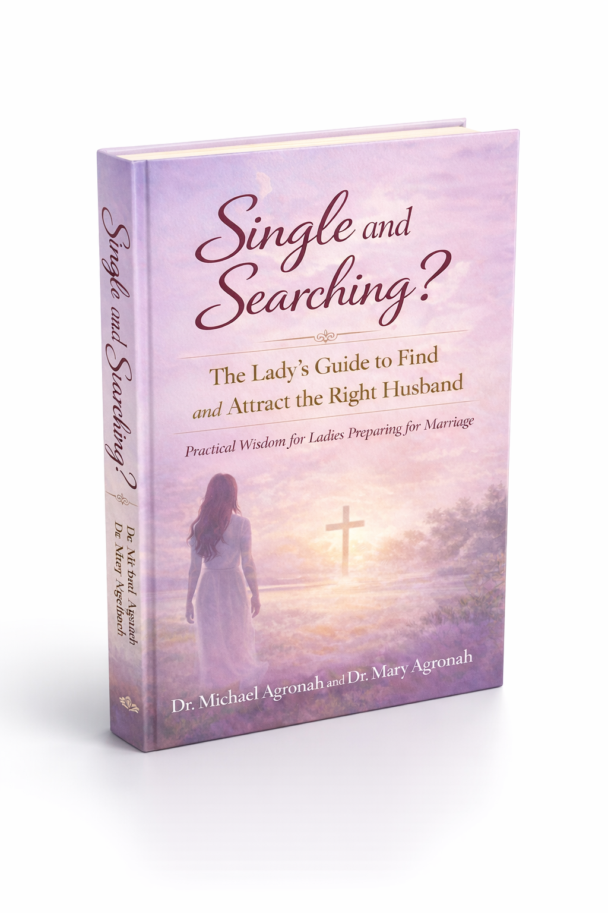

🌱
1
Prepare Yourself
Become the kind of woman capable of building a healthy marriage.

Faith. Wisdom. Purpose.
Biblical wisdom and practical guidance to help Christian women prepare for marriage, recognize the right man, navigate dating wisely, and build toward a healthy marriage.
Many Christian women long for marriage, but feel confused, discouraged, or unsure of what to do next.
♡ If you've wrestled with questions like these, you're in the right place.
A proven pathway to help you prepare, discern, and choose wisely.
Become the kind of woman capable of building a healthy marriage.
Separate biblical essentials from preferences and unrealistic expectations.
Expand your opportunities without compromising your values.
Learn what actually matters when evaluating a potential husband.
Move from attraction to intentional discernment.
Recognize compatibility, warning signs, readiness, and direction.
Meet Your Guides
We're passionate about helping Christian women prepare for godly marriages and find lasting love built on faith, wisdom, character, and purpose.
Our Story →Take the free 3-minute Marriage Readiness Assessment.
The Flagship Resource
Practical wisdom for ladies preparing for marriage. This book helps women move beyond confusion, fear, and passivity into a thoughtful, faith-filled approach to marriage preparation.
Choose Your Format
Read it in print or listen wherever life takes you.
A beautiful physical copy for reading, highlighting, journaling, and sharing.
Buy PaperbackListen during your commute, quiet time, walks, or daily routine.
Get the AudiobookLearn & Grow
Practical articles to help you grow in wisdom and faith.
Learn the character traits that matter most when choosing a life partner.
Read article →Practical ways to widen your opportunities without compromising your values.
Read article →How to distinguish wise standards from unrealistic expectations.
Read article →Faith-filled encouragement for seasons of waiting and uncertainty.
Read article →Watch & Learn
Short, practical teaching to help you prepare, date, and discern wisely.
Your YouTube video can go here
Your YouTube video can go here
Your YouTube video can go here
Our Mission
We believe marriage preparation is not just about finding someone. It is about becoming ready, growing in discernment, recognizing healthy character, and approaching relationships with wisdom rather than fear or pressure.
Through books, teaching, videos, podcasts, and practical resources, we help women take meaningful steps toward healthy, God-honoring relationships.